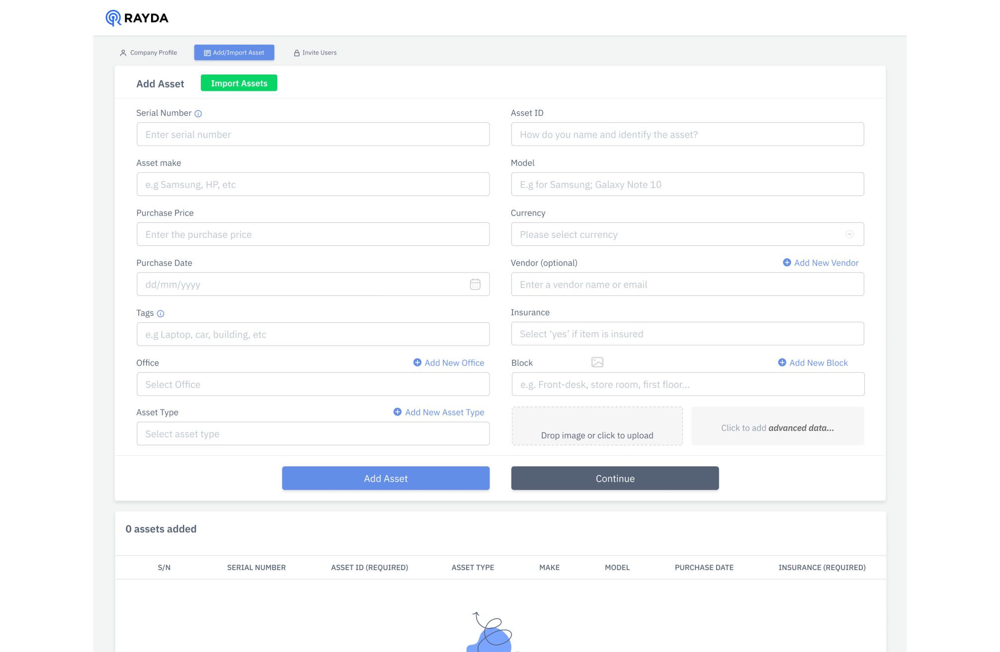
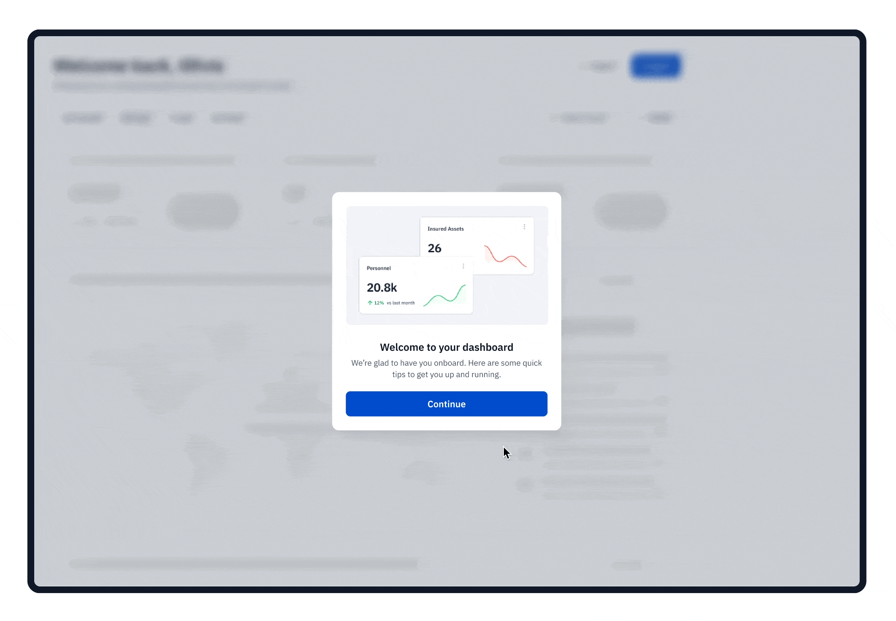
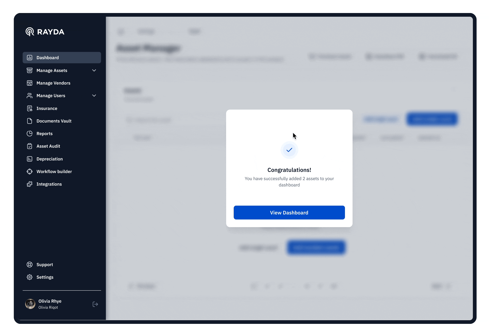

Cart
Rayda Core
Reimagining Rayda Core's onboarding User Experience
Background
Rayda Core helps businesses track their assets efficiently. However, confusing onboarding processes and unclear labels made users depend more on the sales team. Based on user feedback, we needed to figure out and improve these issues for a better experience.
Highlights
MY ROLE
Lead Product designer
ARTIFACTS
Flows,journey map, wireframes, screens
SKILLS & METHODS
Qualitative research, Quantitative research, Competitive analysis, Usability testing, UX design, UI design
TOOLS
Figma, Zoom, Google Docs
CLIENT
Rayda
TIMELINE
Sep - Oct 2023, 6 Weeks
TEAM
Strategic Pivots Based on Research
Quantitative analysis
Examining three months of behavioral data revealed low bounce rates (below 25%), prolonged onboarding times (19 min avg), and sporadic engagement (2-3 days/month) which pointed to opportunities to streamline flows, improve navigation, and increase engagement.
Qualitative studies
Usability testing with five users identified frustration from confusing onboarding flows, increased assistance needs due to unclear UI labels, and hindrances in task completion due to navigation difficulties which revealed needs for simplifying complex actions, guiding users and enhancing clarity.
Customer journey map
The customer journey map visualized existing user paths through Rayda Core's core workflows, synthesizing research to identify pain points like overwhelming inputs and confusing terminology. This enabled pinpointing high-impact areas for redesign focus - streamlining onboarding and simplifying asset management. The map served as a collaborative lens for validating solutions against uncovered frustrations while retaining intuitive existing flows. It kept the user perspective central, guiding transformations from friction areas into delightful experiences.
Key Research Insights
Simplifying flows and reducing cognitive load
Enhancing clarity through descriptive UI copy
Guiding users through tricky workflows
The research made it clear that we needed to fundamentally rethink and redesign the onboarding journey s to eliminate complexity and confusion, guide users intuitively.
The Problem
Synthesizing insights from our quantitative analysis, qualitative testing, and competitive benchmarking revealed a few core problem spaces hampering Rayda Core's user experience:

Excessive inputs overwhelmed users and led to dropoffs
Unclear UI labels, unintuitive CTAs, and ambiguous instructions caused confusion
Complex actions lack guidance, boosting assistance reliance.
Quantitative data showed prolonged onboarding times averaging 19 minutes and low task completion rates. Usability testing uncovered frustrations around cluttered flows and uncertainty around required steps.It became evident that the onboarding process would benefit from simplification, clarity, and guidance enhancements.
There were opportunities to streamline navigation, use intuitive language, and simplify complex actions within core platform workflows.
By pinpointing specific challenges within onboarding workflows, we could focus our redesign efforts on addressing these pain points through targeted solutions. Our research painted a clear picture of the problems users encountered that needed to be tackled.
Key Research Insights
Signup flow:
Excessive steps like entering phone number and verification code made signup cumbersome. Lack of alternative signup options beyond email/password increased drop downs. No visual indicator of progress through the flow caused uncertainty.

Add Asset Flow:
Unclear terminology around "tags" caused confusion on required data. No indications of compulsory fields led to missing information. Limiting users to add only 3 assets initially felt restrictive. Disabled import button with no guidance created blockers.
Conception
User Flows
Central to the redesign was optimizing critical user flows like onboarding, adding assets, and managing assets. Understanding existing pain points allowed us to streamline steps.
Usability Testing and Iteration
We then developed interactive prototypes in Figma, iterating extensively and conducting a moderated usability studies . Seeing realistic high-fidelity designs come to life allowed users to better assess proposed solutions. Feedback from these sessions directly shaped additions like the download button tooltip and apply to all button.
Download Button Tooltip
In usability testing, users misunderstood the "Download Template" button, attempting direct imports. We addressed this by adding a hover tooltip, guiding users to download the template first for required asset data. This iteration crucially resolved user confusion during import tasks.
Apply to All Button
Users sought faster bulk editing for imported assets. We introduced an "Apply to all" button post-editing, streamlining changes across columns with one click. This enhancement responds to feedback seeking efficient bulk edit capabilities.
Solution
By simplifying the user experience, we aim to increase user adoption and engagement. Smoother onboarding encourages users to explore our platform and become active participants.
Making Signup a Breeze
We simplified the signup process by reducing the number of inputs required. Users now only need to provide essential details like email and password to create an account. Alternative signup options via Google or Facebook were introduced as well, preventing drop-offs.

Adding Assets Effortlessly
The asset addition process was enhanced to be more intuitive for users. Clear descriptive labels, helpful tooltips, and visual indicators inform users of required fields. Users can now efficiently import multiple assets in bulk, avoiding the need to add one by one.
Importing Data Seamlessly
The data import process was improved by allowing users to preview imported data and identify any errors before final submission. Bulk editing capabilities were introduced as well, enabling quick modifications to all assets rather than editing individually.

Collaborating on Onboarding
To distribute workload, admins can now invite collaborators via email and share signup links with access permissions. This facilitates collaborative onboarding instead of individuals completing all tasks alone.
Impact
Improved onboarding process boosts user adoption, engagement, satisfaction, and growth.
50%
Faster onboarding
60%
User satisfaction
92%
User satisfaction
Outcomes & Learning
Measured BIDDA's success through key metrics and user feedback, capturing the app's positive impact and effectiveness. Our journey towards enhancing the onboarding experience wasn't just about implementing changes; it was an opportunity for continuous learning and improvement.
Success Metrics
Post-launch, Rayda Core saw a 50% increase in onboarding completion rates and 38% higher platform retention, validating the success of the redesign.
User Feedback
Users consistently reported the enhanced experience as more intuitive and user-friendly, with reduced complexity and increased clarity.
Personal Reflection
This undertaking emphasized the immense value of user research for uncovering pain points, and user-centric design focused on simplification and guidance. The project proved the power of reiterative concept testing.
Continuing the Pursuit of Optimal Experiences
Updates & Evolution
Rayda Core is poised for continuous refinement based on user insights. Expanded tutorials and virtual assistant capabilities are on the roadmap to further optimize usability.
Emerging Trends
We are watching no-code, AI, and conversational UI trends that may shape future capabilities to drive further self-service and simplify complex actions.